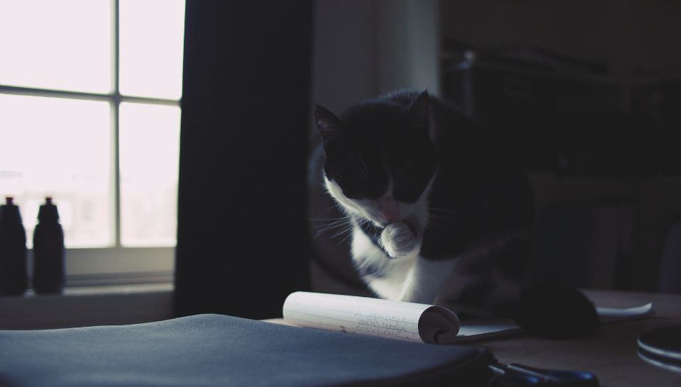
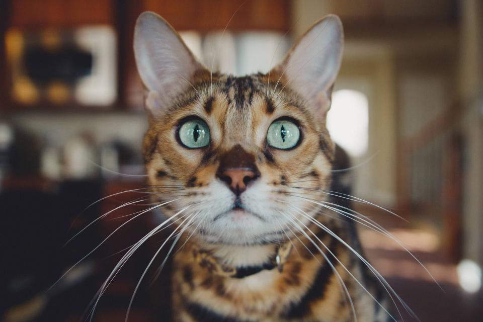
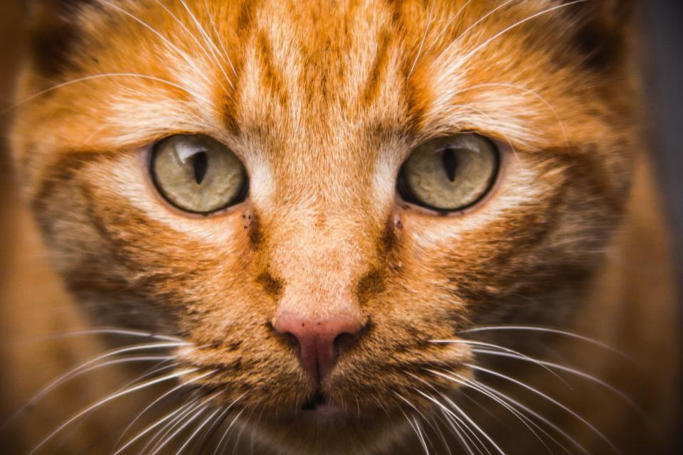
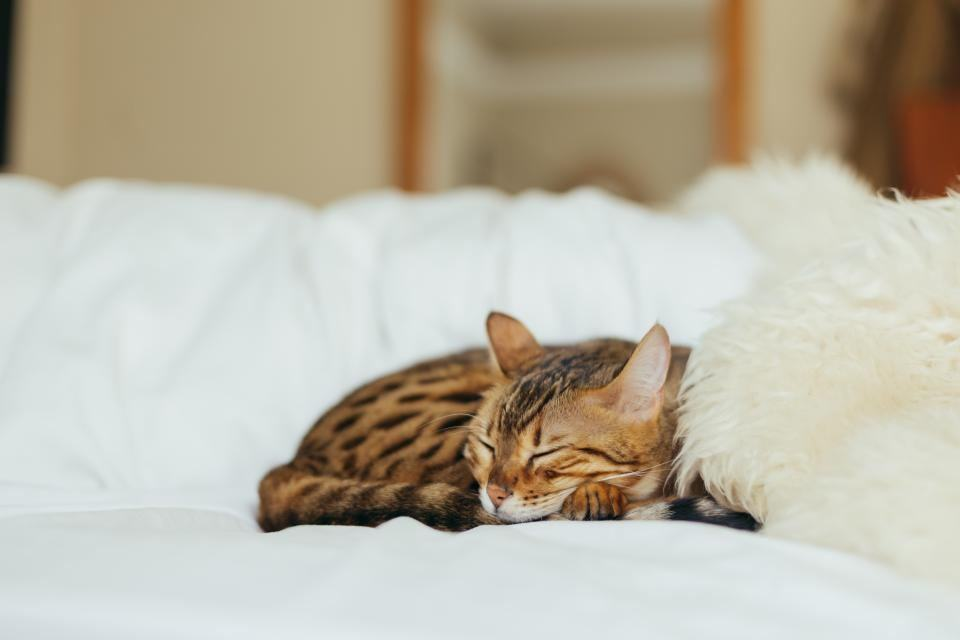
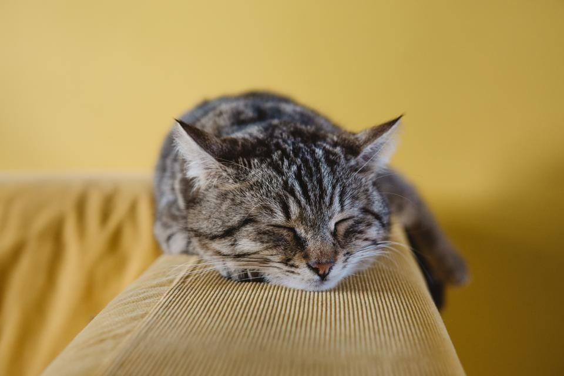
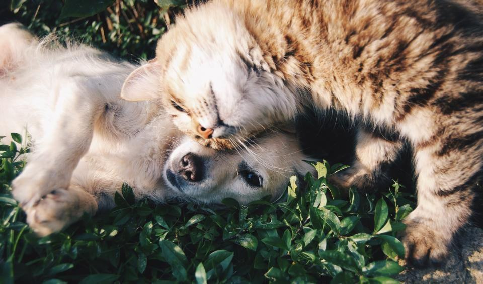
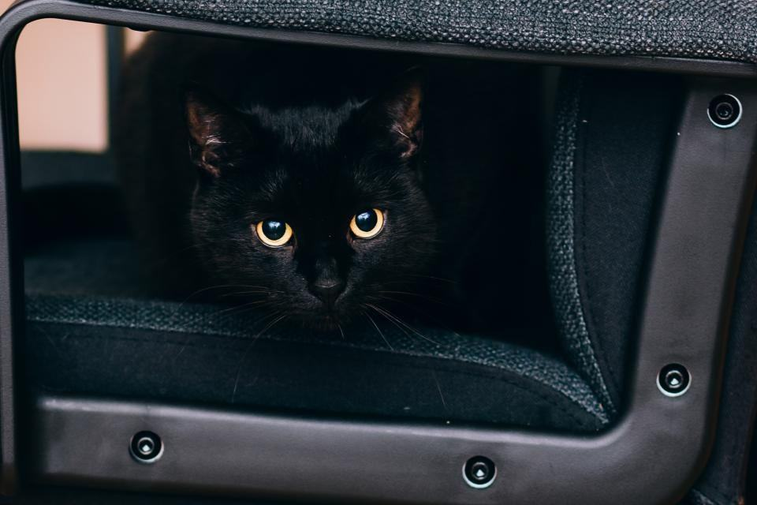

Behandlingar
I dag är vi tre kattfrisörer som kör var sin bil i Gävleborg och norra Uppland. Vi bokar en katt per hembesök, eller flera om de bor i samma hushåll, och räknar med 90 minuter inklusive att packa upp och städa efter oss. Vi tar inte emot hundar.
Filt, klor eller hela pälsen?

Hembesök för katter
Vi väljer det lugnaste rummet i bostaden och lägger ut en halkfri matta på bordet eller golvet. Katten får nosa på väskan innan vi börjar.
De flesta katter behandlas på diskbänken eller i badkaret.

Filt och tovor
Tovor som sitter tätt mot huden klipps med kattsäker trimmer, lösare filt reds ut med kam och balsam. Vi arbetar i pass om högst femton minuter.
Är nästan hela pälsen filtad bokar vi ett andra besök sju dagar senare.

Äldre och sjuka katter
Gamla katter slutar ofta tvätta sig när ryggen blir stel. Vi kortar pälsen på rygg och bak och tar bort mjäll och flottig päls.
Vi samarbetar med Gävle Kattklinik när katten har hudproblem.

Uppfödare och katterier
Inför utställningar badar och fönar vi hela kullar och vuxna katter hemma hos uppfödaren. Det sparar en dag i bil för både katter och människor.
Vi följer SVERAKs riktlinjer för utställningsförberedelse.
Från ringklocka till dammsugare
- 1

Bokning och bild
Du skickar en bild på pälsen och berättar om kattens hälsa. Vi föreslår en tid och uppskattar hur lång tid det tar.
- 2

Vi packar upp
Vi kommer med väska på hjul och ställer i ordning i det rum du väljer. Katten får titta på i lugn och ro.
- 3

Behandling i pass
Högst femton minuter i taget, med paus när katten säger ifrån.
- 4

Städat efter oss
Vi dammsuger upp hår och torkar av ytorna innan vi åker.